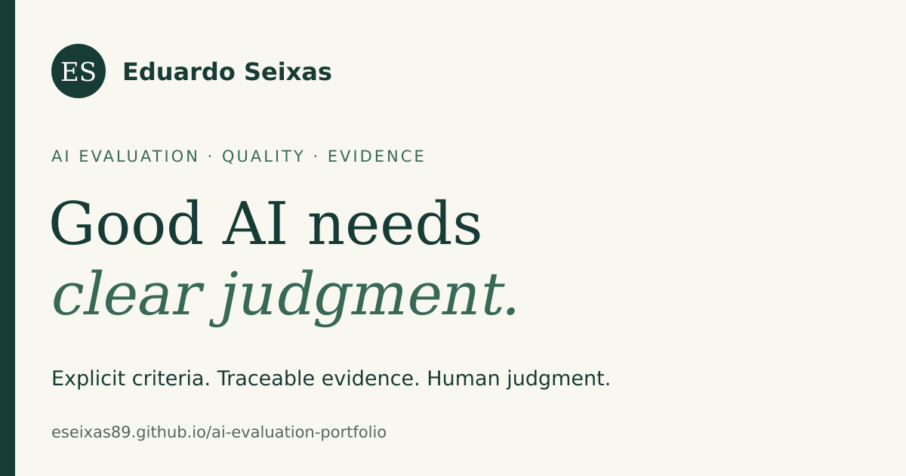
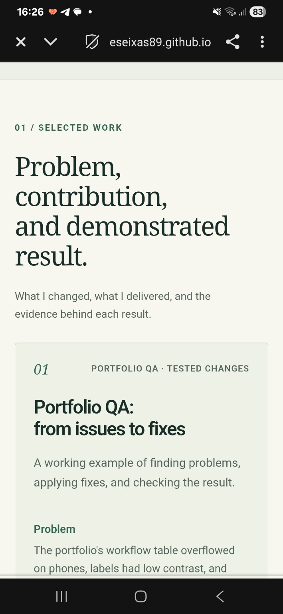

Plant Your Flag / Domain + Badge / 17 October 2026
A public address.
A verifiable record.
This launch record was prepared with AI assistance. It documents the current public address and metadata, and separates working configuration from the account and credential details still needed.
The public address
https://eseixas89.github.io/ai-evaluation-portfolio/
The portfolio retains the existing free GitHub Pages subdomain, eseixas89.github.io, and its project path. It is not a purchased custom domain. The assignment's portal Q&A explicitly accepts any free subdomain; the existing address is used under that fallback. No domain purchase or DNS migration was made.
Public HTTPS requests succeeded with normal certificate verification. The site serves its pages and assets securely, with no HTTP resource references found in the checked HTML. Inspect the live-address checks ↗
Titles, favicon and sharing
The public HTML pages were checked for titles, descriptions, favicon links, canonical URLs, Open Graph metadata, and large-image Twitter cards. The favicon is the existing ES mark. The published preview image loads at 1200 × 630 pixels.
The launch check found six older project pages without an explicit favicon link. Those links were added so the ES mark is available consistently across the site. Inspect the before-fix observations ↗
Homepage title: Eduardo Seixas | AI Evaluation & Applied Research
Homepage description: Eduardo Seixas: AI evaluation, data quality, science education, and applied research. Explore projects, experience, and evidence.

This is a rendering of the published metadata and image. It is not a screenshot from WhatsApp or LinkedIn, and no platform-specific cache refresh is claimed. Inspect the favicon ↗ · Open the social image ↗


Analytics — installed; dashboard confirmation pending
The owner supplied the Cloudflare Web Analytics snippet for eseixas89.github.io. It is installed before the closing body tag on all 14 HTML pages, including the 404 page. The supplied module script and public site token were preserved. No DNS move was required.
Verified installation: the published HTML contains the expected beacon on all fourteen pages. The Work browser opened the live homepage and confirmed the matching module-script configuration. Normal HTTPS certificate verification and launch metadata checks passed. Inspect the installation evidence ↗
Remaining evidence: the collection endpoint's acknowledgement and an actual dashboard visit count have not been independently observed. Open the portfolio normally, allow a few minutes for processing, then capture the real Cloudflare dashboard when a visit appears. Automated verification traffic is not organic traffic and may be filtered as bots.
Technical verification boundary
The local test browser reported a certificate-authority error before opening the site; certificate validation was not bypassed. The Work browser opened the public site and exposed the correct script configuration, but its available inspection API did not expose network acknowledgements. The public HTTPS checks passed. This installation record does not turn those observations into a claimed dashboard count.
Official installation instructions ↗ · About Cloudflare Web Analytics ↗
Graduate badge — awaiting an issued credential
The official FlyRank credential badge tool requires a credential ID and first name, and links the badge to that person's verification result. No issued credential ID has been provided for this site, so no graduate badge is currently displayed.
Once a credential is issued, verify it, select General AI Fluency, enter Eduardo's actual credential details, and copy the official banner HTML into the homepage footer. Its verification link must resolve to Eduardo's record before publishing the badge.
The portal Q&A supplied with this assignment says a member may submit without the badge while awaiting issuance and add it later. That timing exception is recorded here; the dashboard confirmation and analytics screenshot remain outstanding evidence.
Final phone check
Confirmed by the owner on 17 October 2026. Eduardo reported “Continua funcionando” and supplied the capture below, showing the selected work section on the same Samsung A15. The screenshot clock reads 16:26 local time. This records a fresh physical-phone opening; the earlier detailed checks remain in the mobile fix log.

Submission evidence
The live portfolio and this launch record are public. The final phone confirmation is recorded above. Published-script evidence is linked above; a real dashboard screenshot remains to be added; the issued badge can follow the timing exception above. Read the setup handoff ↗
Resumo em português
O endereço gratuito do GitHub Pages foi mantido como alternativa aceita no Q&A da tarefa. HTTPS, títulos, favicon e metadados foram conferidos. O código público do Cloudflare Web Analytics foi recebido e instalado nas 14 páginas HTML. O código correto foi observado na página publicada, e as 14 páginas passaram nas verificações de HTTPS e metadados. Uma visita no painel e sua captura real ainda precisam ser confirmadas. O badge depende do ID de uma credencial emitida. O Q&A permite entregá-lo depois, quando estiver disponível. O usuário abriu novamente o endereço no Samsung A15, enviou uma captura com horário 16:26 e confirmou: “Continua funcionando”. A nova verificação no telefone foi registrada.